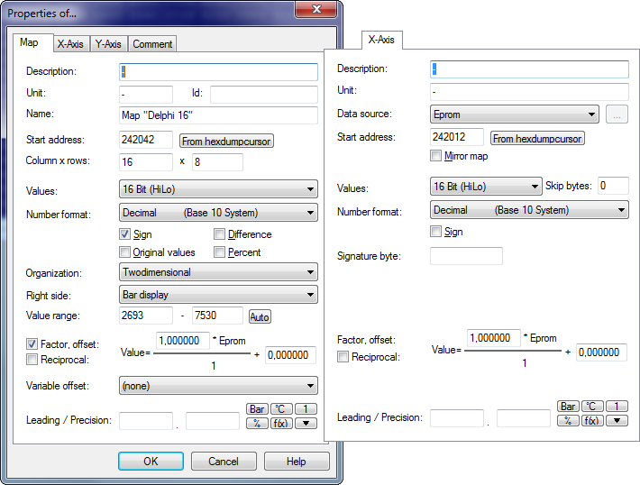
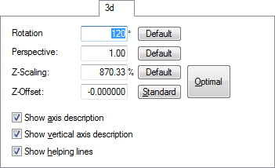

|
The dialog properties: Window (Menu Edit) |

  
|
|
The dialog properties: Window (Menu Edit) |
|
Use this dialog to manage the properties of the current window. The look of this dialog depends of the active window.
For Hexdump-windows:

Start Address: |
The (virtual) address of the first upper-left cell. This can be a negative number if you shift the Hexdump to the left / right. |
Columns |
Enter the number of columns in this field. |
Values |
Here the number of bytes per cell and the byte organisation (LoHi/HiLo) can be edited. This also displays the value range. |
Number format |
You may choose between a binary, decimal and a hexadecimal display. |
Original |
Display the original values instead of the current version |
Sign |
Interpret the data as signed values |
Difference |
Instead of displaying the absolute value you may use this option to show the difference between the cell value and the original value. |
Percent |
Instead of displaying the cell value this option can display the relative difference between the cell value and the original value. |
Right side |
Optionally you may display the values as ASCII-Characters or bars. |
Value range |
If a bar display is chosen you may use these edit fields to enter the number range displayed in bar. If only the number 1-10 are used in the data you could optimize the display for this value range.
If you activate the Option "Dynamic", then WinOLS will automatically determine the best scale for any bar data. This will allow you to recognize more maps, especially in 16 and 32 bit mode, but it may cause two rows in a one map to have a different scale. Once a map is registered or recognized as potential map, WinOLS will automatically use the value range of the map for displaying its data in the hexdump. |
Factor & Offset |
Factor and offset help to display physical values by applying multiplication and addition before displaying them. The value is calculated by the following formula: DisplayedValue = Value*Factor + Offset |
Leading |
Number of visible digits before the dot. This can be useful for 32 values which can have lots of digits in theory and often don't use so many. Leave empty for automatic configuration. |
Precision |
The number of visible digits after the dot. |
For map-windows:

The following information is stored in the first sheet of the window.
Description, Unit, Id, Name |
User-defined descriptions. The name should describe the entire map, while description and unit should refer the to map content (without axis). The id is normally used only by A2L imports. |
Data source |
Defines the source, where the axis data is taken from. You may choose the automatic enumeration or values from the eprom (which may also be calculated with additions or subtractions or indexed with alternating index and value). Moreover you may decide to enter your own values, which are not stored within the eprom, but externally. |
Start address |
This address defines the beginning of the map |
Rows & Columns |
The map size |
Mirror map |
Use this checkbox to display the map (map and axis) in reverse (in direction of the axis) order. |
Values |
Here the number of bytes per cell and the byte organisation (LoHi/HiLo) can be edited. This also displays the value range. |
Skip bytes |
For some ECUs not all bytes are used for the axis but only every second, for example. Enter the number of bytes that should be skipped between 2 values / lines. (Tips for Vertical maps) |
Number format |
You may choose between a binary, decimal and a hexadecimal display. |
Sign |
Displays the values as signed values. |
Original values |
Instead of displaying the modified version, WinOLS will show the unmodified original values. |
Difference |
Instead of displaying the absolute value you may use this option to show the difference between the cell value and the original value. |
Percent |
Instead of displaying the cell value this option can display the relative difference between the cell value and the original value. |
Signature id |
An internal id found by the potential map search. The map axis profiles use this in their signature. |
Organization |
The type of the map (point, 1d, 2d, 2d mirrored) |
Right side |
Optionally you may display the values as ASCII-Characters or bars. |
Value range |
If a bar display is chosen you may use these edit fields to enter the number range displayed in bar. If only the number 1-10 are used in the data you could optimize the display for this value range. |
Auto |
Use this button to optimize the value range for the current map data. |
Factor & Offset |
Factor and offset help to display physical values by applying multiplication and addition before displaying them. The value is calculated by the following formula: DisplayedValue = Value*Factor + Offset |
Reciprocal |
Displays the data as the reciprocal of their original value. |
Variable offset |
For trim maps, you can add another map as offset to the current map. Simply select the other map from list. (The list contains all maps with identical axis addresses.) For the view WinOLS adds the values of the other map (but not the axes) like an offset to the current map. |
Leading |
Number of visible digits before the dot. This can be useful for 32 values which can have lots of digits in theory and often don't use so many. Leave empty for automatic configuration. |
Precision |
The number of visible digits after the dot. |
Bar / °C / 1 |
Loads stored values for fields factor, offset, unit and precision. |
% |
Adjusts factor / offset in such a way that the value at the map cursor is scaled to 100% |
f(x) |
Starts a formula wizard to help you calculate factor / offset from more difficult formulas or from sample values. |
Triangle |
With the arrow button and the menu that is opened by this button you may store your own preferences. To do so, just enter them into the mentioned fields. To store them into one of the ten entries, keep the shift key pressed while selecting an entry from the menu. You can recall the values anytime simply by selecting the entry again (without shift). |
For 3d-map-windows:

The fourth sheet contains information about the three-dimensional view.
Rotation |
This determines the rotation of the view around the vertical axis. |
Perspective |
The value shows the influence of the perspective on the view. |
Z-Scaling |
The Z-Scaling determines how much the map is stretched or compacted vertically for the view. |
Z-Offset |
The Z-Offset is a vertical offset which can be used to make negative values displayable. |
Show axis description |
Self-explaining |
Show vertical axis description |
Self-explaining |
Show helping lines |
Self-explaining |
Templates for map names:
With the button ">" you can store / use a tree structure with map names. The text file with the names must have the following format:
Name of the group1
-Name1.1
-Name1.2
Name of the group2
-Name2.1
...
Shortcuts
| Symbol bar: |
| Keyboard: | Alt+Enter |